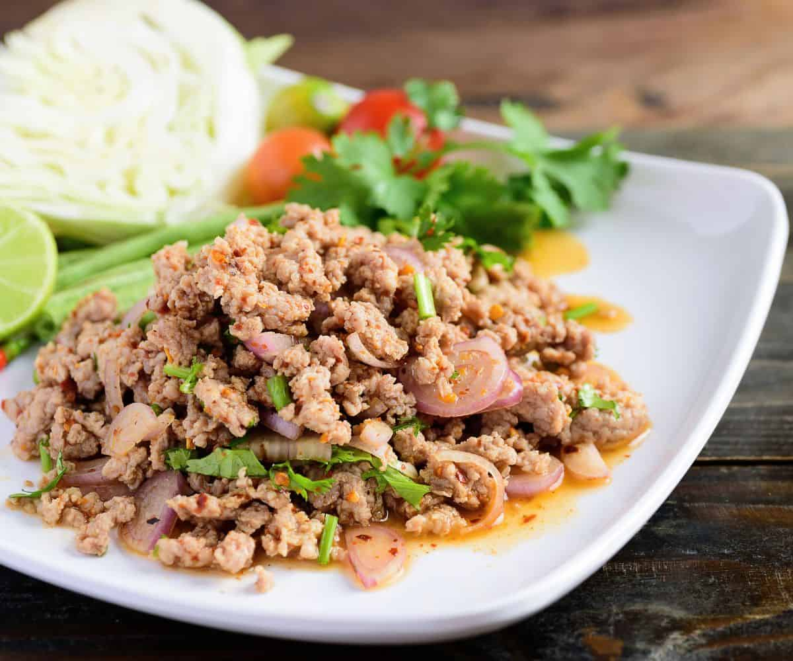

Spicy Minced Pork Salad
Spicy minced pork salad is the side dish eating with sticky rice,taste spicy,sour and salty,In Thai we called it "Larb" or "Laab"and served nationwide as a popular restaurant and street food.
Spicy minced pork the main is pork or in Thai"Moo" but if you don't have pork try duck or meat.

Ingredient
- Ground pork (or chicken, beef, duck, or mushrooms for vegetarian)
- Shallots, thinly sliced
- 1 small clove of garlic
- Fresh herbs(Mint leaves,Cilantro,Green onions)
- Toasted rice powder (khao khua) gives nutty flavor and texture
- Dried chili flakes
- Fish sauce
- Sugar (optional usually palm sugar)
- Lime juice
- Water or stock (for lightly cooking the meat)
preparation
- 1.Cook the pork
Heat a pan over medium heat. Add pork and a few tablespoons of water or stock.
Stir and break it up as it cooks until fully cooked (no browning), about 4 to 5 minutes.
- 2.Season the meat
Add fish sauce, lime juice, sugar, and chili flakes. Mix well and taste — it should be sour, salty, and spicy.
- 3.Add shallots and herbs
Toss in sliced shallots, green onions, mint, and cilantro. Mix gently.
- 4.Finish with toasted rice powder
Sprinkle in the toasted rice powder and give it one final mix.
- 5.Serve
Serve warm or at room temperature with sticky rice and fresh vegetables like cucumber, lettuce, or cabbage.